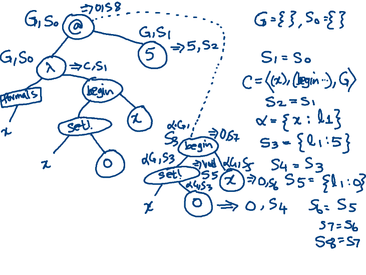

An execution model for imperative programs
Table of Contents
- 1. The declarative model
- 2. Imperative programs
- 3. Components of the imperative model
- 4. Evaluating imperative programs
- 5. Evaluating ASTs for imperative programs
- 6. Evaluating a
set! - 7. Evaluating a
beginexpression - 8. Creating new bindings
- 9. Losing Referential transparency
- 10. Examples of Evaluation
1 The declarative model
1.1 Value Space
Val ::= Num | Bool | Sym |
Str | Procedure
Procedure ::= Primitive | Closure
Note that Procedure could either be primitive or a closure
1.2 Environment Space
Environments map identifiers to values.
Env = Id -> Val
1.3 Evaluator Space
- Evaluation takes an Expression and an Environment.
- Evaluation returns a value.
Eval = [Exp, Env] -> Val
1.4 Expression Space (Syntax)
The evaluation model discussed so far works on a language of expressions. Here is a grammar of the language used in our model.
1.4.1 Datum
<atom> ::= <num> | <bool> |
<str> | <sym>
<datum> ::= <atom> |
(<datum> ...)
(<datum> ... . <datum>)
1.4.2 Literal
<lit-exp> ::= <num> | <bool>
<str>
'<sym> |
'(<datum> ...)
#(<datum> ...)
'<lit-exp>
1.4.3 Expression
<exp> ::= <lit-exp> |
<id-exp>
<app-exp> |
<fn-exp> |
<let-exp> |
<letrec-exp> |
<if-exp> |
<cond-exp>
<id-exp> ::= <sym>
; but excluding keywords
<app-exp> ::= (<exp> <exp> ...)
<fn-exp> ::= (lambda <formals> <exp>)
<formals> ::= (<id> ...)
<let-exp> ::= (let <binds> <exp>)
<binds> ::= (<bind> ...)
<bind> ::= (<id> <exp>)
<letrec-exp>
::= (letrec <binds> <exp>)
1.4.4 Conditional
<if-exp> ::= (if <exp> <exp> <exp>)
<cond-exp> ::= (cond <clause> <clause> ...) |
(cond <clause> ... <else-clause>)
<clause> ::= (<exp> <exp>)
<else-clause> ::= (else <exp>)
1.4.5 Definition
<defn> ::= (define <id> <exp>)
2 Imperative programs
2.1 Main idea
Imperative programs work on memory, or store.
The value in a memory location may be modified, or mutated to contain a new value.
2.2 Example
Consider the Racket program:
(define x 3) (define f (lambda () (begin (set! x 0) 5))) (f) ; => 5 x ; => 0
When f is invoked, it returns
5, but it also silently
changes the contents of the
memory location to which x is
bound to contain 0.
3 Components of the imperative model
Understanding the imperative model requires we revisit our notion of values, and environments, and formalize the notion of memory.
3.1 Value space extended with Void
We extend the notion of values
to include the type Void . An
element of Void can only be
returned, and at top level there
is no way to either read it or
print it.
Val := ... | Void
3.2 A model for memory
A Memory is a map from locations to values.
Mem = Loc -> Val
Locations are also known as memory addresses.
3.3 An updated model of environments
Environment is now a map from identifiers to locations.
Env = Id -> Loc
In other words, the denotations of identifiers in imperative programs are locations.
3.4 No pointers
Locations are not values. They refer to addresses where values are memd. It isn't possible to have an expression return a location.
Some languages, like C allow locations to be values. In such languages, these locations are called pointers.
All the languages we consider in this course are both functional and imperative, but none of them have pointers.
3.5 Memory, like environment is not a value
Note, like the environment, memory is not a value and can not be directly accessed.
3.6 Identifier vs. Variables
A variable is an identifier whose denotation is a location rather than a value.
3.7 Imperative program syntax
We extend the syntax of pure functional programs with the following productions
<exp> ::=
<assign-exp> |
<seq-exp>
<assign-exp> ::= (set! <id> <exp>)
<seq-exp> ::= (begin <exp> <exp> ...)
4 Evaluating imperative programs
4.1 Basic structure of evaluation
- Evaluating an imperative programs also returns a value.
- But may also side-effect, or modify the state.
- How do we characterise the signature of evaluation in the imperative setting?
4.2 The signature of the evaluator
An evaluator takes an expression, an environment and a memory and returns a value, but also a memory (potentially a new mapping from locations to values.)
eval: Exp, Env, Mem -> [Val, Mem]
4.3 Memory, like environment is implicit
Note, like the environment, the memory is never explicit. Like an environment, it is not returned as a value of any expression.
4.4 Variable lookup
In the imperative model, evaluating a variable reference occurrence involves the following steps:
- Look up the variable in the environment.
- The lookup results in a location
- Take the location and index it into the store.
Thus, the evaluation of a reference occurrence of an identifier returns not its denotation, a memory location, but the contents of that memory location.
Compare this with the declarative model, where evaluating a reference occurrence returns its denotation, which is a value.
4.5 Assignments modify memory
So far, we have only seen how a store is employed in evaluating a variable's reference occurrence.
However, a store may be modified as well
This is done by the variable
assignment construct set!.
The syntax is shown below:
(set! <id> <exp>)
5 Evaluating ASTs for imperative programs
- Each vertex takes in an environment and a memory.
- Expression evaluation returns a value and a memory.
- Declaration elaboration returns an environment (or binding) and a memory.
6 Evaluating a set!
To evaluate (set! <id> <exp>)
in an r environment and a
store s, we do the following
steps:
- 1. Evaluate
<exp>inrands. - 2. This returns a value
vand a new stores1. - 3. Lookup
<id>inrto retrieve a locationl. - 4. Return a new store
s2which is identical tos1, except thats2mapsltov. - 5. Return
voidand the new stores2.
7 Evaluating a begin expression
A begin expression is for
sequencing.
(begin <exp> <exp> ...)
- Each expression is evaluated in order.
- Each expression may modify the memory.
- The value of the
beginexpression is the value returned by the last subexpression.
8 Creating new bindings
Creating new binding now involves:
- extending the memory with a
new location
l - Binding an identifier
xto the new locationl. - Populating
lwith the valuev.
9 Losing Referential transparency
Pure functional programs have the advantage of referential transparency. Once you know the binding of an identifier, you can replace the reference occurrence of an identifier with its value of its binding occurrence.
9.1 Example of referential transparency
(let ([y 5]) y) = ; substituting y with 5 (let ([y 5]) 5) = 5
This is extremely useful to debug programs, because we can now execute programs by simplifying them (as we have done so far).
9.2 Referential transparency breaks down
(let ([y 5])
(begin
(set! y 0)
y)) =
(let ([y 5])
(begin
(set! y 0)
5)) =
5
However, when we run the program, we get the answer 0. This mismatch is because we can no longer substitute an identifier with its bind expression.
10 Examples of Evaluation
Examples of AST evaluation in
10.1 begin and set!
AST annotation of the expression
(begin (set! x 0) x) evaluated
with G = {x:l_1} and s_0 =
{l_1: 5} is shown below:

10.2 Application
AST annotation of the expression
((lambda (x) (begin (set! x 0) x)) 5)
is shown below. Notice the new locations during creation of the environment \(alpha\).
